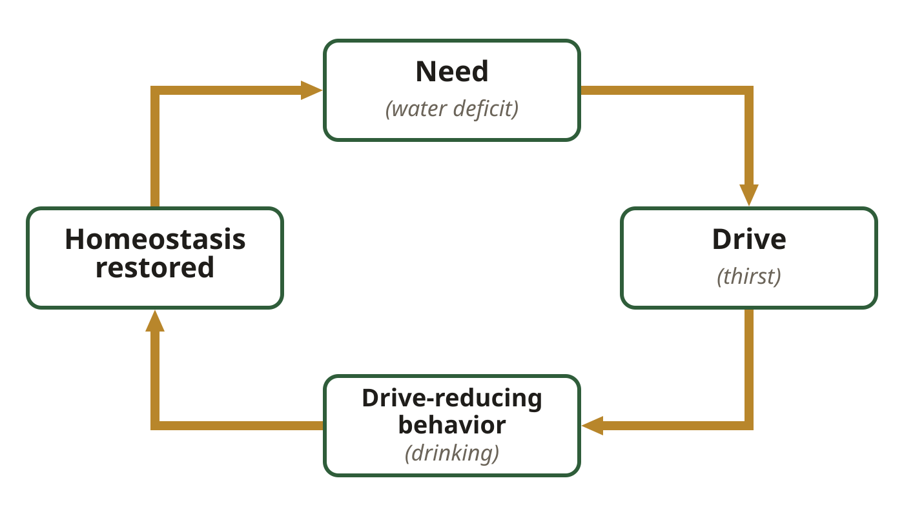
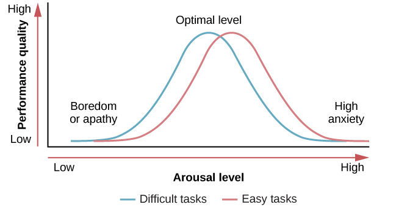
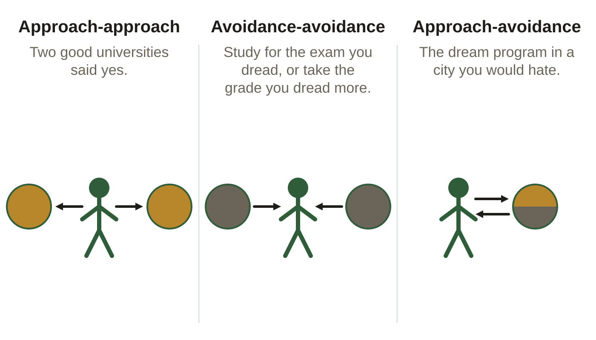
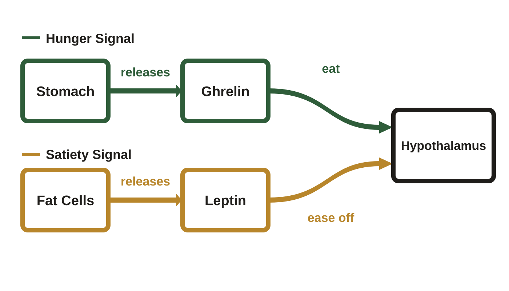
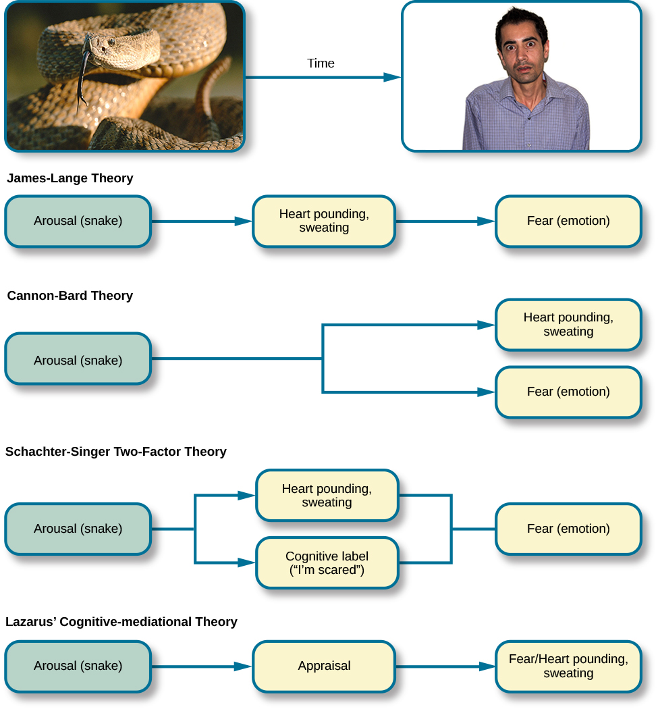
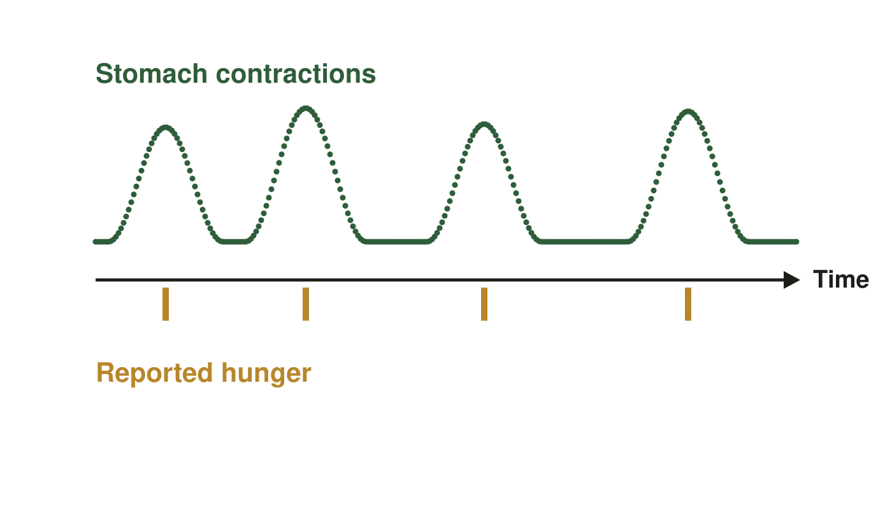

Motivation and emotion. These are the same figures as in your Class Notes, in the same order. If a figure in your notes shows as a gray box, use this page instead.
Slide 7. Drive-Reduction Theory

The loop with one thread running through it. The need is the deficit; the drive is the uncomfortable state that deficit creates.
Slide 8. The Right Amount of Arousal

Each curve has its own optimal level, at a different arousal. OpenStax, Psychology 2e, Figure 10.7, CC BY 4.0
Slide 12. Lewin's Three Conflicts

The three conflicts, with each pull drawn as an arrow.
Slide 16. The Hunger Hormones

Two opposing signals arriving at once and weighed together, not one after the other.
Slide 30. The Order Each Theory Claims

OpenStax, Psychology 2e, Figure 10.21, CC BY 4.0
Slide 44. The 1912 Balloon Tracing

One continuous contraction trace, drawn schematically. The marks line up with the waves, which shows the two coincided, not that contractions caused the hunger.